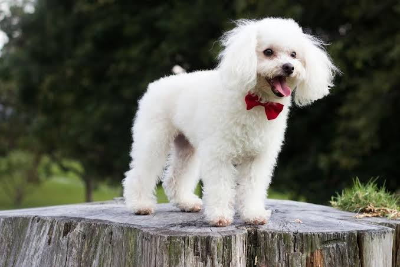

Poodle

Apesar de muitos associarem o Poodle à França, a raça tem origem na Alemanha, onde era utilizada como cão de caça aquática. Com o tempo, ganhou popularidade na Europa como cão de companhia, tornando-se símbolo de elegância.
Ouça o latido
Veja o em ação
Características
O Poodle é uma das raças mais inteligentes do mundo, além de ser hipoalergênico — ideal para pessoas com alergias. Existe em diferentes tamanhos (Standard, Médio, Toy e Miniatura), o que o torna versátil para diferentes estilos de vida.
A raça é reconhecida oficialmente pela CBKC, que estabelece o padrão da raça no Brasil.
Nível de energia:
Facilidade de adestramento:
"O Poodle não é apenas elegante — é uma das raças mais espertas e fáceis de treinar que existem."
— Manual Brasileiro de Raças Caninas
Você sabia?
Muita gente pensa que o Poodle é originário
da França da Alemanha, sendo a França
apenas o país que popularizou a raça como cão de companhia.
Curiosidade sobre o Poodle
O corte de pelo tradicional do Poodle não é apenas estético — ele surgiu para ajudar o cão a se movimentar melhor na água durante caçadas, mantendo aquecidas apenas as articulações principais.